Master System - Os jogos da Capcom
 :::. Por B-Mark
:::. Por B-Mark
Após escrever o artigo Mega Drive - Os jogos da Capcom, agora trago o mesmo tema só que envolvendo os jogos para o Master System.
Só na base do licenciamento
Como disse em meu artigo para Mega Drive, as relações entre Sega e Capcom consistia somente em licenciar títulos para que a Sega os convertesse para seus sistemas, já que na época a Capcom tinha um contrato de exclusividade com a Nitendo que a impedia de produzir jogos para sistemas concorrentes. Com isso, a Capcom não participou do desenvolvimento destes jogos que são mostrados aqui. Além da Sega, outras empresas também pegaram licenciamento da Capcom, no caso a U.S. Gold com Strider II e a Tec Toy com Street Fighter II.
Forgotten Worlds
 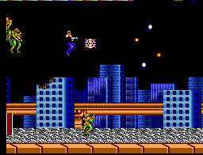
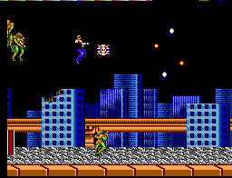
Fabricante: Sega
Ano: 1991
Forgotten Worlds conta a
história de um guerreiro de nome desconhecido que luta contra
alienígenas que dominaram a Terra. O jogo é um shooter onde você controla um soldado ao invés de uma nave. Lançado
2 anos depois da versão para o Mega Drive, esta versão tem apenas 5
fases, sendo que a terceira é exclusiva para o Master System. Além
disso, o tiro sai automaticamente, não sendo necessário apertar botões
como em outras versões. Os botões 1 e 2 servem para girar o personagem
nos sentidos horário e anti-horário. O tiro automático foi criado para
compensar a falta de um terceiro botão e os erros de inglês da versão
para Mega Drive foram corrigidos nesta versão para Master System.
Ghouls N´ Ghosts
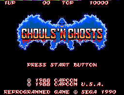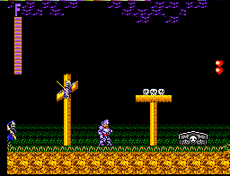
Fabricante: Sega
Ano: 1990
A continuação de Ghosts and Goblins também teve sua versão para Master System convertida pela Sega. Os gráficos ficaram bons para os padrões do console, mas inferior a outras versões. A
versão 8 bits deste jogo possui algumas características próprias como a
resistência da armadura, e quando você destroi um baú aparece uma porta
que te leva a uma pessoa que te dá o direito de escolher uma arma, peças de armadura, e outras coisas mais.
MERCS
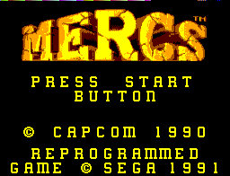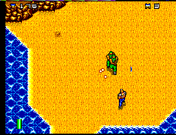
Fabricante: Sega
Ano: 1991
MERCS também teve sua versão para Master System. Esta
versão também não possui o multiplayer como a
versão do Mega Drive e o Original Mode também ficou de
fora.
Street Fighter II
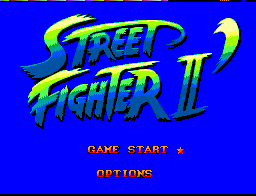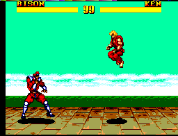
Fabricante: Tec Toy
Ano: 1997
Conversão do famoso jogo de arcade pela Tec Toy. A
empresa conseguiu o licenciamento do jogo da Capcom por meio da Romstar
do Brasil, empresa que na época representava a Capcom por aqui. Esta
versão aparentemente foi baseada no Street Fighter II Special Champion
Edition do Mega Drive e os rostos dos personagens são os mesmos do Super
Street Fighter II. Conta com apenas 8 lutadores: Ryu, Ken, Chun Li,
Blanka, Guile, Balrog, Sagat e M.Bison. A sua jogabilidade é inferior
quando comparada às versões para arcades e consoles de 16 e 32 bits, e
muitos consideram este SF 2 para Master System da Tec Toy melhor que os
SF 2 piratas que saíram para o NES. O jogo não tem nem placar e
consequentemente também não tem fase de bônus.
Nota do Giga: esse jogo é uma bosta ! Mas vale a pedida para fechar qualquer coleção
! Mas vale a pedida para fechar qualquer coleção .
.
Strider
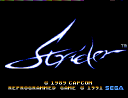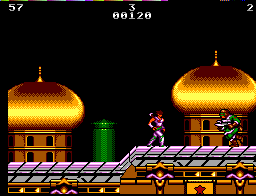
Fabricante: Sega
Ano: 1991
Strider
é um clássico do Mega Drive, mas infelizmente não dá para dizer o mesmo
desta versão para Master System que ficou bem abaixo da versão para o
16 bits da Sega. O
jogo tem jogabilidade e som ruins que nem com 4 mega de memória
foi possível mudar isso e fazer um jogo decente para o console.
Strider II
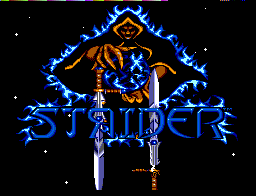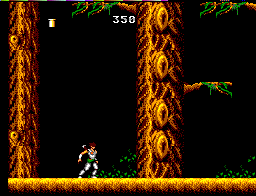
Fabricante: U.S. Gold
Ano: 1993
A pseudo sequência de Strider
produzida pela U.S. Gold, com a autorização da Capcom,
também teve sua versão para Master System. Se
a versão do Mega era ruim, esta versão para Master é ainda pior e
curiosamente lembra o Strider para o 8 bits da Sega, até parece que
os 2 jogos foram produzidos pela mesma equipe.
Acesse o Trombone e comente sobre essa matéria!


Um dos erros mais imperdoáveis da Sega. Em 90/91 mais ou menos, a Sega ganhou da Tecmo a oportunidade de fazer umas versões do Ninja Gaiden para os seus consoles. Essa chance é comparável ao que Deus fez quando deu o mundo para Adão... bem, o final tanto de Adão quanto da Sega nesse caso são semelhantes.
Albert Odyssey é um dos jogos mais amados pelos fãs do Saturn. Com uma história simples mas rica, dramatica e emocionante, encantou muita gente que naquele inicio da era 32 bits, ainda não estava acostumada com trilha sonora feita com instrumentos de verdade e gráficos cheios de luz e efeitos. Mas, não era para ser assim com esse jogo...